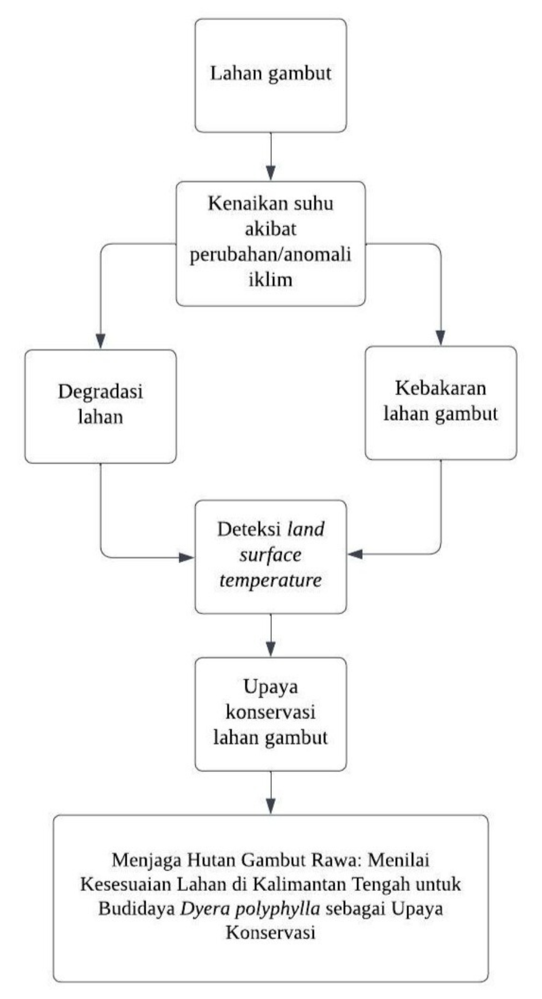
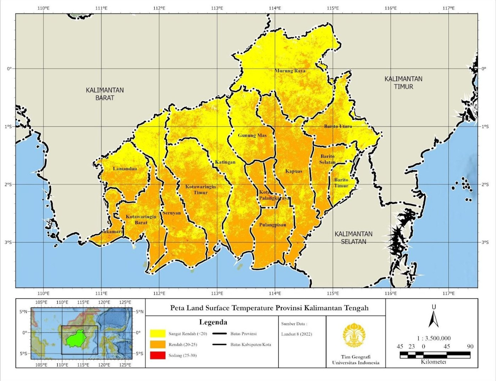
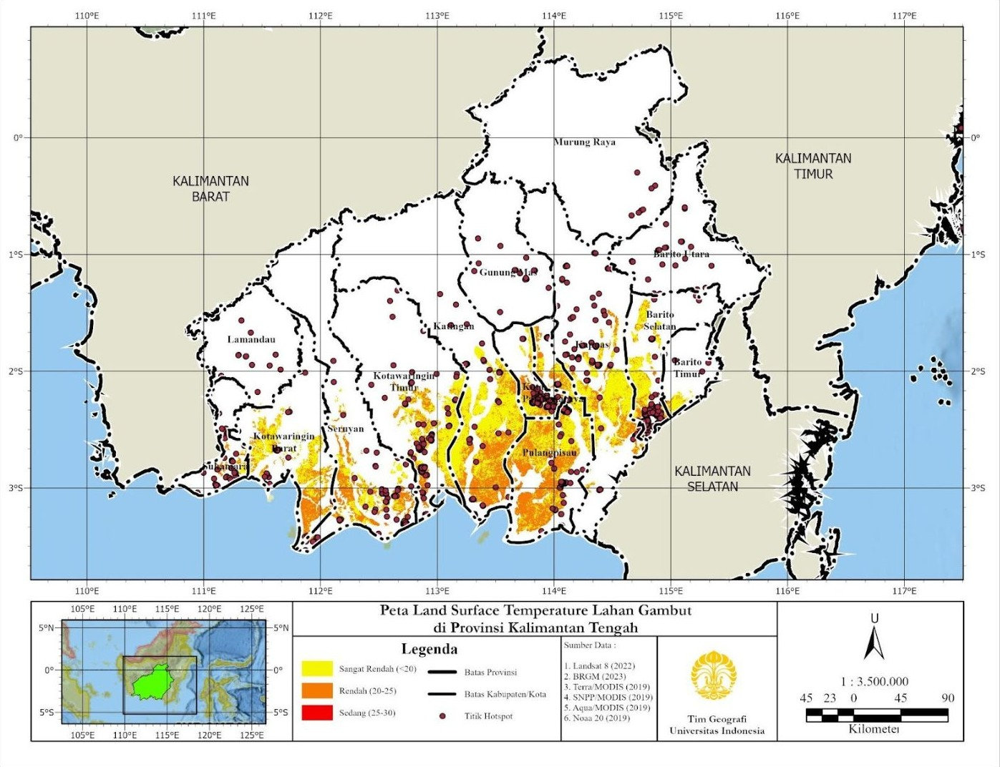
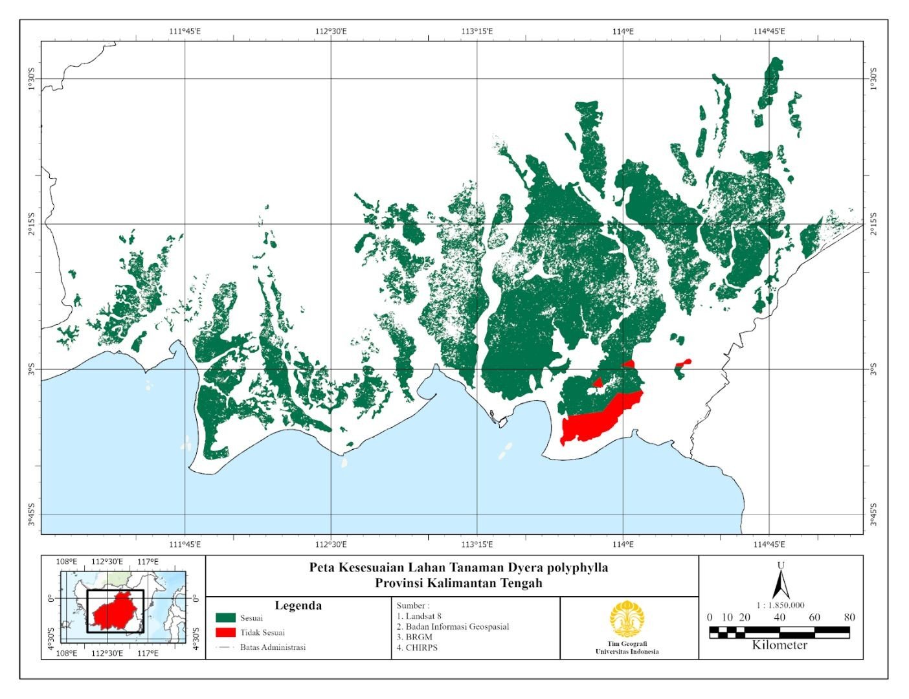

Menjaga Gambut: Menilai Kesesuaian Lahan di Kalimantan Tengah untuk Budidaya Dyera polyphylla sebagai Upaya Konservasi
Latar belakang
Sekitar 10,8% daratan Indonesia merupakan ekosistem gambut. Ekosistem ini berperan sebagai tempat penyimpanan karbon, habitat berbagai flora dan fauna, penyuplai air, serta sumber hasil hutan yang menopang perekonomian. Namun manfaat tersebut terancam oleh deforestasi, degradasi, dan kebakaran lahan, baik akibat kekeringan karena anomali iklim seperti El Niño maupun pembakaran yang disengaja untuk alih fungsi lahan.
Lahan gambut di Kalimantan Tengah termasuk yang terdegradasi secara luas dan intensif. Gambut memiliki sifat mudah mengering tidak balik: setelah kadar airnya turun, gambut sulit menyerap air kembali, mudah terbakar, dan apinya dapat menjalar di bawah permukaan sehingga sulit dipadamkan. Kekeringan ini dikaitkan dengan peningkatan suhu permukaan tanah (Land Surface Temperature atau LST), karena suhu permukaan yang tinggi mempercepat penguapan dan menurunkan kelembaban tanah.
Salah satu upaya rehabilitasi adalah penanaman tanaman yang sesuai dengan karakteristik gambut, yaitu jelutung rawa (Dyera polyphylla). Tanaman ini memiliki daya adaptasi yang baik pada lahan gambut dan bernilai ekonomi karena getahnya dapat dijadikan bahan baku permen karet dan kayunya untuk furnitur. Penelitian ini bertujuan memetakan persebaran LST pada lahan gambut Kalimantan Tengah dan menilai kesesuaian lahannya untuk tanaman jelutung rawa sebagai upaya konservasi.
Data yang digunakan
| Data | Tahun | Jenis Data | Sumber |
|---|---|---|---|
| Land Surface Temperature (LST) | 2022 | Sekunder (raster) | Landsat 8 |
| Suhu Udara / Air Surface Temperature (AST) | 2022 | Sekunder (raster, turunan LST) | Landsat 8 |
| Curah Hujan | 2022 | Sekunder (raster) | CHIRPS |
| Ketinggian | 2016 | Sekunder (raster) | Badan Informasi Geospasial |
| Sebaran Lahan Gambut | 2023 | Sekunder (vektor, didigitasi ulang) | BRGM (PRIMS) |
| Titik Hotspot | 2020 | Sekunder (titik) | LAPAN |
| Batas Administrasi Kalimantan Tengah | 2019 | Sekunder (vektor) | Badan Informasi Geospasial |
Metode
Penelitian ini menggunakan analisis spasial overlay intersect pada ArcGIS Pro untuk menilai kesesuaian lahan, sedangkan data LST diolah dengan Google Earth Engine. Alur berpikir penelitian berawal dari lahan gambut yang terancam degradasi dan kebakaran akibat kenaikan suhu, sehingga dibutuhkan deteksi LST sebagai langkah mitigasi awal dan konservasi sebagai langkah preventif.

LST dihitung dari citra Landsat 8 sepanjang tahun 2022 di Google Earth Engine, kemudian diklasifikasikan ke dalam lima kelas (sangat rendah, rendah, sedang, tinggi, sangat tinggi) dan dianalisis secara deskriptif. Karena data suhu udara (AST) sangat terbatas, AST diturunkan dari LST dengan asumsi AST = LST + 2,7 °C, berdasarkan penelitian Wibowo dkk. (2020) yang menyatakan AST sekitar 2 sampai 4 °C lebih tinggi daripada LST. Hasil asumsi ini selaras dengan pengamatan BMKG, yaitu suhu minimum 19,8 °C, maksimum 35,2 °C, dan rata-rata 27,1 °C.
| Kelas LST | Suhu Permukaan |
|---|---|
| Sangat Rendah | < 20 °C |
| Rendah | 20 – 25 °C |
| Sedang | 25 – 30 °C |
| Tinggi | 30 – 35 °C |
| Sangat Tinggi | > 35 °C |
Untuk kesesuaian lahan, tiga variabel syarat tumbuh jelutung rawa, yaitu suhu udara, curah hujan, dan ketinggian, masing-masing diklasifikasikan menjadi kelas sesuai dan tidak sesuai. Peta-peta tersebut kemudian ditumpangsusunkan dengan teknik intersect bersama peta sebaran lahan gambut, sehingga hasil akhirnya hanya menampilkan kesesuaian di area gambut.
| Variabel | Sesuai | Tidak Sesuai |
|---|---|---|
| Suhu udara (AST) | 23 – 28 °C | < 23 °C dan > 28 °C |
| Curah hujan | 1.500 – 3.000 mm/tahun | < 1.500 dan > 3.000 mm/tahun |
| Ketinggian | 0 – 300 mdpl | > 300 mdpl |
Selain itu, titik hotspot dari LAPAN yang berbasis citra MODIS (resolusi 1 km × 1 km) ditumpangkan pada peta LST gambut untuk melihat hubungan antara suhu permukaan dan titik panas kebakaran.
Hasil
Persebaran Land Surface Temperature
LST di Provinsi Kalimantan Tengah berada pada tiga kelas, yaitu sangat rendah, rendah, dan sedang, dengan kelas rendah (20 – 25 °C) sebagai yang paling dominan. Meski demikian, kelas suhu yang tergolong tidak tinggi tidak berarti gambut aman dari kebakaran. Pada kejadian kebakaran Juli 2023, suhu udara mencapai 33 °C sehingga suhu permukaan tanah diperkirakan sekitar 29 – 30 °C, yang secara klasifikasi masih masuk kelas sedang. Artinya, gambut tetap berisiko terbakar ketika ada penyulutan api, baik disengaja maupun tidak.


Titik hotspot terkonsentrasi di Kota Palangka Raya, selaras dengan kebakaran lahan gambut di kota tersebut pada tahun 2023 yang tercatat sebanyak 314 kejadian dengan total gambut terbakar seluas 197,42 Ha (BPBD, 2023). Fenomena El Niño turut mendukung potensi kekeringan yang memicu kebakaran ini.
Kesesuaian lahan jelutung rawa
Hasil overlay menunjukkan bahwa hampir seluruh lahan gambut di Kalimantan Tengah sesuai untuk penanaman Dyera polyphylla. Dari total 2.495.334 Ha lahan gambut, 97,4% berada pada kelas sesuai dan hanya 2,6% yang tidak sesuai.
| Kelas Kesesuaian | Luas (Ha) | Persentase (%) |
|---|---|---|
| Sesuai | 2.430.730 | 97,4 |
| Tidak Sesuai | 64.604 | 2,6 |
| Total | 2.495.334 | 100 |

Area yang tidak sesuai berada di bagian selatan provinsi. Dari tiga variabel yang diuji, perbedaan curah hujan menjadi faktor pembatas utama, karena wilayah selatan tersebut menerima curah hujan di bawah 1.500 mm per tahun, sedangkan jelutung rawa membutuhkan 1.500 sampai 3.000 mm per tahun. Dominasi kelas sesuai ini menunjukkan potensi yang baik bagi jelutung rawa untuk dikembangkan sebagai salah satu upaya konservasi gambut, sekaligus menjaga kondisi hidrologi karena toleransinya yang tinggi terhadap muka air tanah yang tinggi dan banjir.
Kesimpulan
LST pada lahan gambut Kalimantan Tengah berada pada kelas sangat rendah hingga sedang, dengan kelas rendah (20 – 25 °C) yang paling dominan. Namun kebakaran tetap dapat terjadi walaupun suhu permukaan di bawah 30 °C, karena dipicu oleh faktor seperti suhu udara, kurangnya air pada parit, dan angin kencang, sebagaimana tampak pada sebaran hotspot di Palangka Raya.
Berdasarkan analisis suhu, curah hujan, dan ketinggian, sebanyak 2.430.730 Ha (97,4%) lahan gambut di Kalimantan Tengah sesuai untuk jelutung rawa, sedangkan 64.604 Ha (2,6%) di bagian selatan tidak sesuai terutama karena curah hujan yang kurang. Peta kesesuaian ini dapat menjadi acuan lokasi penanaman jelutung rawa untuk konservasi lahan gambut. Karena persentase kelas sesuai sangat besar, penelitian lanjutan dengan variabel yang lebih beragam, seperti kedalaman gambut dan tinggi muka air tanah, akan membantu menentukan lokasi prioritas yang lebih tajam.
← View other projects